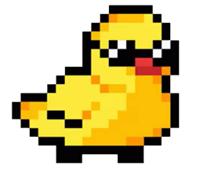
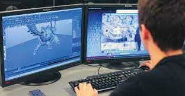
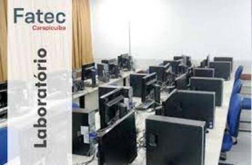

História da Quack
A Quack é um grupo criado por 5 estudantes do curso de Jogos Digitais da Fatec de Carapicuíba.
Quack foi formada para fins educacionais, mas acabou se tornando uma microempresa através de uma grande amizade entre o grupo. Trabalhamos desenvolvendo jogos cada vez mais intuitivos e a cada semestre em uma plataforma diferente.

